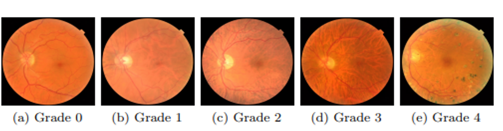

Intro
Diabetic retinopathy (DR) is a type of ocular disease that can cause blindness due to damaged blood vessels in the back of the eye. The causes of DR are high blood pressure and high blood sugar concentration, which are very common in modern lifestyles. People with diabetes usually have higher risks of developing DR. In fact, one-third of diabetes patients show the symptoms of diabetic retinopathy according to recent studies. Therefore, early detection of DR is critical to ensure successful treatment. Unfortunately, detecting and grading diabetic retinopathy in practice is a laborious task, and DR is difficult to diagnose at an early stage even for professional ophthalmologists. As a result, developing a precise automatic DR diagnostic device is both necessary and advantageous.
Automated DR diagnosis systems take retinal images (fundus images) and yield DR grades. In the common retinal imaging dataset of DR, the grades of DR can be categorized into five stages: 0 - no DR, 1 - mild DR, 2 - moderate DR, 3 - severe DR, and 4 - proliferative DR. Specifically, the severity of DR is determined by taking the numbers, sizes, and appearances of lesions into account. For instance, the figure below provides an illustration of five DR grades in the Kaggle DR dataset. As can be seen, the characteristics of DR grades are complex in both structure and texture aspects. Therefore, automated diagnosis systems are required to be capable of extracting meaningful visual features from retinal images for precise DR grading.
